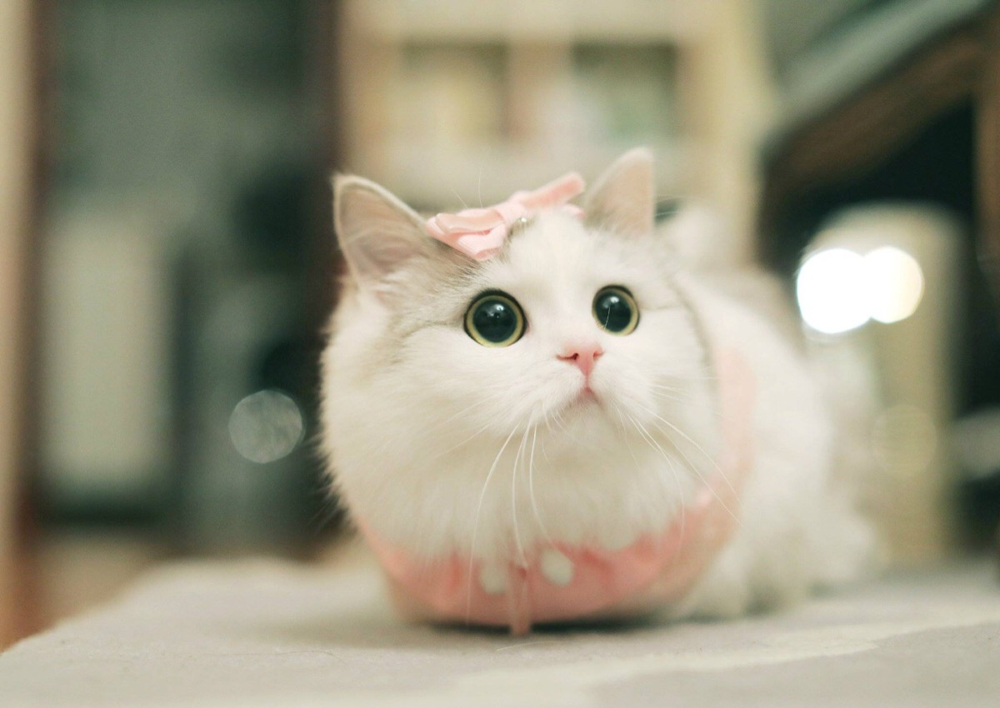
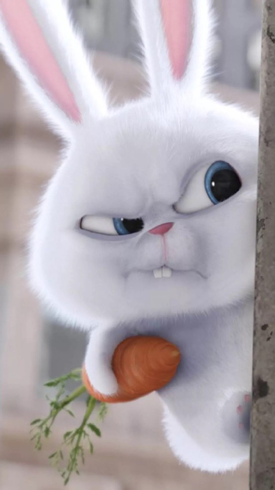
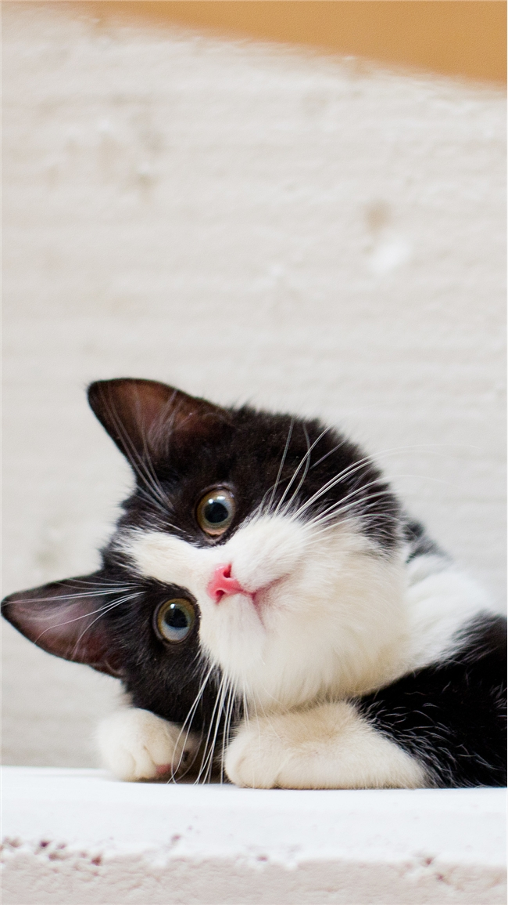
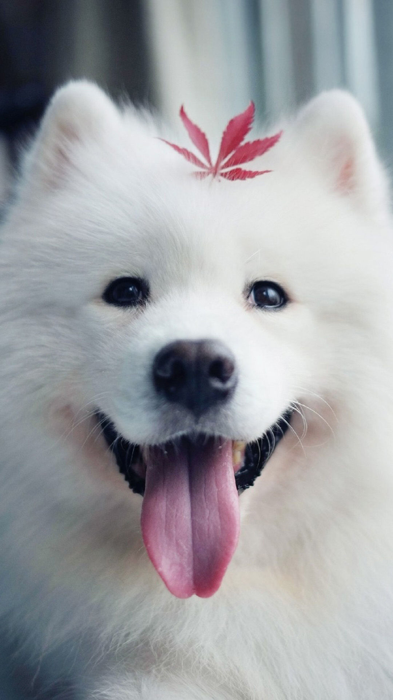
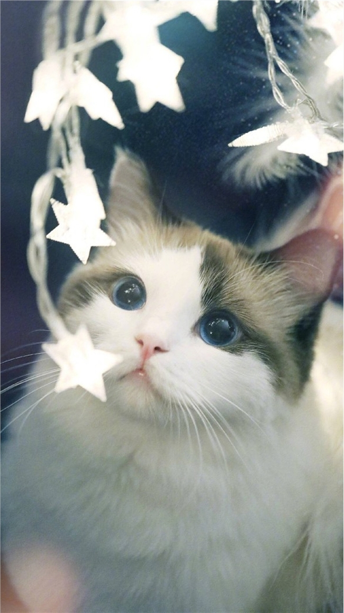
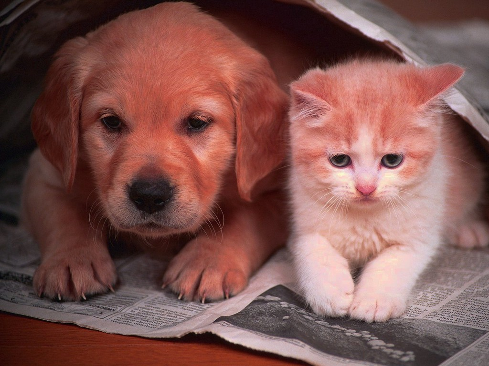
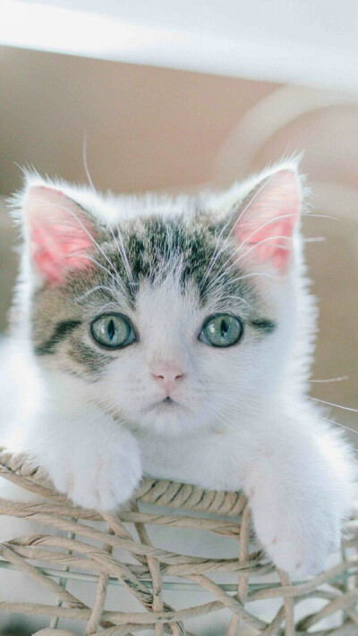
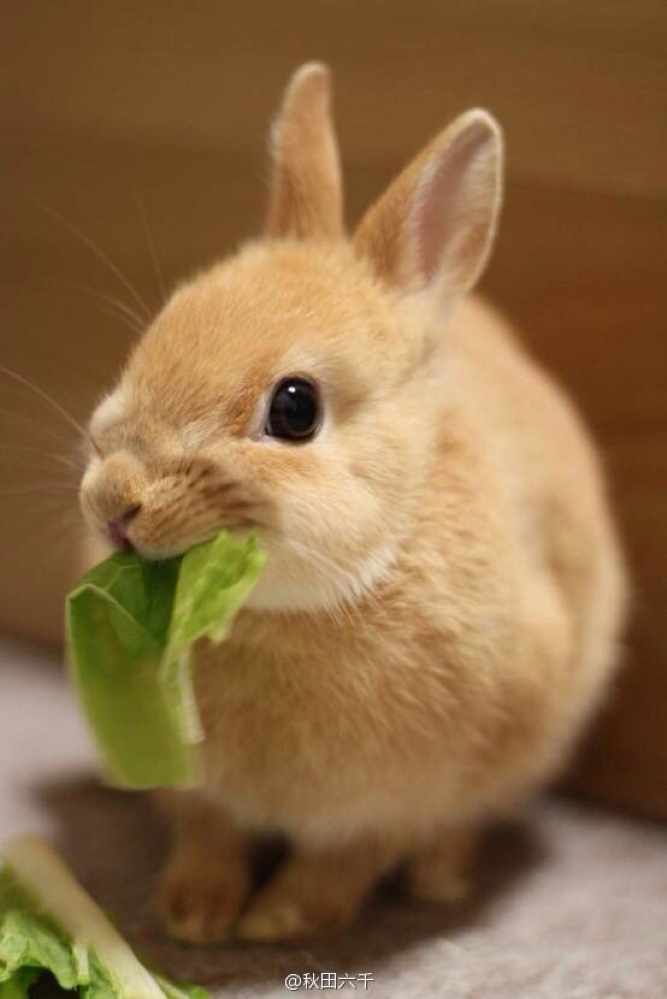

另外一只则是一只长着虎皮斑纹的小猫咪，一张童真的脸蛋，配着那双眼睛里除了黑色瞳孔外嫩黄色的水汪汪的大眼睛很是漂亮
我家养了一只小猫咪，名叫顽皮。顽皮长着一双棕色的眼睛，晚上会发出绿莹莹的光。它有着一张灰褐色的嘴，嘴边向两旁竖起一些长长的胡须。
这只花猫的全身是白底黑斑，远看上去，像一团雪白的棉花点上了几滴墨汁。
孔雀开屏时，犹如一把碧纱宫扇，尾羽上那些眼斑反射着光彩，好像无数面小镜子。
一只翠鸟忽地从柳树间飞出，掠过水面往另一个树丛中去了，它那美丽的羽毛带走了众人的眼。
这只天真可爱的卷毛狮子狗，小黑尾巴一摆动起来，像个滚动的小绒球。
雪白的羊群撒在碧绿的草原上，像花、像云、像圣洁的哈达。
孔雀飞起来就如同一朵绮丽的绿色彩云，从山顶上飘过。







